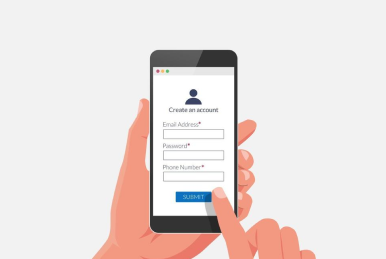

ServiHogar fue diseñada para que contratar un servicio del hogar sea rápido, seguro y sin complicaciones. En pocos pasos conectas con un trabajador independiente verificado, cercano a tu ubicación, disponible para atenderte ahora o cuando lo necesites. Sin llamadas, sin negociaciones informales, sin incertidumbre.
Regístrate en segundos. Indica si eres cliente buscando servicios o trabajador independiente ofreciendo tu oficio. Tu cuenta te da acceso al sistema de match, historial y mensajes en tiempo real.

Elige la categoría de servicio (plomería, electricidad, limpieza, mudanzas, carpintería y más) o escribe directamente lo que necesitas. La plataforma identifica a los trabajadores disponibles y cercanos a ti por geolocalización.
Revisa los perfiles con historial de servicios, calificaciones verificadas y portafolio de trabajos. Confirma la contratación, coordina por chat interno y recibe notificaciones en tiempo real del estado de tu servicio.